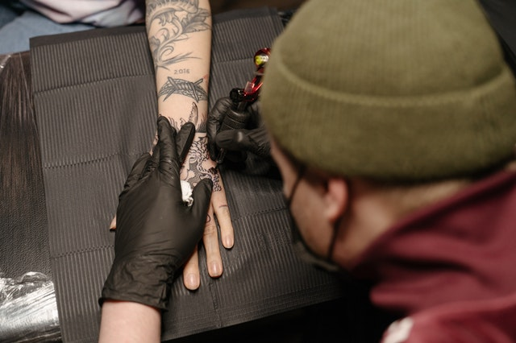

Un tatuaje es una forma de modificación corporal, la cual consiste en alterar de manera temporal o permanente el color de la piel, sobre la cual se plasma un dibujo, un patrón, una figura o un texto, el cual se plasma con agujas u otros utensilios que inyectan tinta o algún otro pigmento en la dermis de una persona
No hay duda alguna de que la tinta es un aspecto más que fundamental en los tatuajes. Lógicamente, es la materia prima del tatuaje (no debería ni aclararlo) y su calidad determinará no solamente que el tatuaje quede bien, sino que también nos evitará problemas a futuro.
 Ir a la pagina principalEl primer lavado puede, fácilmente, causar problemas a tu tatuaje si no se hace correctamente. Así que asegúrate de leer detenidamente las instrucciones para superar esta parte del proceso con éxito. Después de quitar la venda o plástico es probable que tu tatuaje esté cubierto por una gruesa capa pegajosa de sangre, plasma, tinta y líquido linfático. El plasma transparente es lo que hay que limpiar más a fondo, ya que este es el fluido que eventualmente comenzará a fraguar y endurecerse para comenzar el proceso de formación de costras. Aunque desde luego que deseas que tu tatuaje se llene de costras (y lo hará), una capa gruesa de plasma sobre la zona causará que la piel se arrugue mucho más de lo necesario, haciendo que tu tatuaje parezca mucho más desagradable durante el proceso de cicatrización. Las costras más densas también harán que la probabilidad de que se rompa una costra sea mayor de lo normal. Antes de limpiar tu tatuaje, límpiate las manos completamente para eliminar cualquier bacteria. Procede a verter, suavemente, una taza de agua tibia sobre el área, mojando la zona con la palma y los dedos, y NO con una toalla/paño áspero/sucio. Asegúrate de que el agua no esté caliente, ya que el calor/vapor puede abrir los poros de la piel recientemente entintados, lo cual podría permitir que la tinta se filtre fuera del área, haciendo que tu tatuaje parezca irregular. Es probable que tu tatuaje esté rojo y adolorido a este punto, por lo que puede ser relativamente doloroso lavar la zona: ¡humedécela y haz todo el esfuerzo posible para que salga bien!